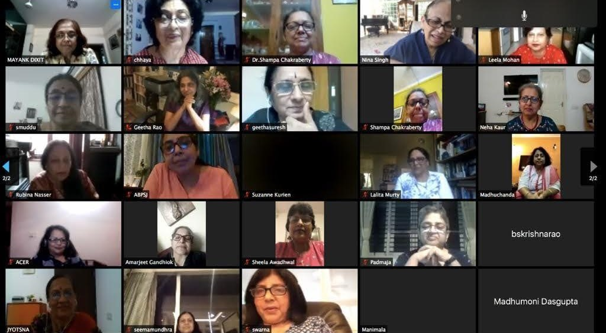
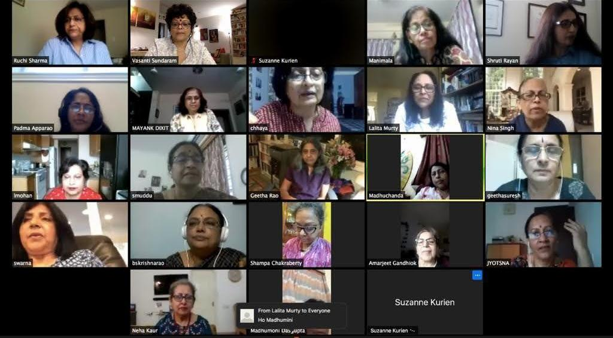

Reunion

Loreto ICSE batch of 1974,
Is connecting like never before.
Video created by Mangala dear,
Will remain a befitting souvenir.
Corona Virus had such an impact,
There arose an urgency to interact.
School mates from corners of the globe,
Proposed to meet despite work load.
Overcoming constraints on travel,
Due to the pandemic upheaval.
Within the confines of our homes,
We verbalise across all time zones.
Zoom screen on the computer,
Appeared to be on fire.
29 pairs of beaming eyes,
Viewed each other and got energized.
Excitement of greetings,
Felt like a re-awakening.
Waving of hands and oozing of love,
All went hand in glove.
So much to listen, so much to narrate,
All joined to celebrate.
A treasure of memories lay in store,
We knocked at nostalgia's door.
We stand tall as a group,
Very firmly remain in loop.
Unconditional support for one another,
Remains guaranteed forever.
The pandemic is a wake up call,
To keep one's eye on the ball.
We dwell in a changing world,
What occurs tomorrow still unfurled.
